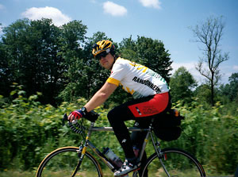
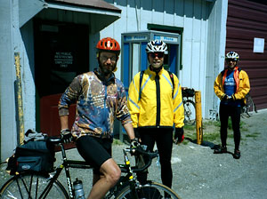

Volume 7 Issue 3 - May/June 2002
 In This Issue
In This IssueCurrent 2002 Brevet Schedule
400 km Brevet Results
Mark Thomas: 400 km Ride Report
600 km Brevet Results
Kent Peterson: 600 km Ride Report
Jon Muellner: 600 km Ride Report
Paul Johnson: 600 km PWTC Ride Report
Road Snippets
SIR Email List
For those of you on-line, join in the SIR email list! It's a great way to share info, ride schedules, car-pooling to events and training with other SIR members. To get on go to http://www.phred.org/mailman/listinfo/sir. It's easy!
SIR Volunteers Needed
SIR members wishing to help out on any of the brevets, please contact the organizer directly and offer your support. Running a double series this year will be easier if we all pitch in!
SIR Membership Increases
SIR has grown to over 75 members this year and we've got the Summer/Fall Brevet Series starting in August. We've had spectacular turnouts for all brevets and PBP is coming next year so now's the time to get ready!
| Aug 3 | 200 km | Terry Zmrhal | Out and back from Bremerton to Union and then partway up the Hood Canal and back. |
| Aug 24 | 300 km | Terry Zmrhal | Bremerton-Quilcene-Union-back (via Bainbridge). |
| Sept 14-15 | 400 km | Mark Thomas | Some variation on Ron Lee's 400 km route to Sumas and Birch Bay, with the North Cascades 600 km tacked on to make the 1000 km route. |
| Sept 14-17 | 1000 km | Mark Thomas | See 400 km route above. |
| Sept 21 | 100 km Populaire | Kent Peterson | Repeat of last year's climbfest. |
| Oct 6 | 600 km | Still need volunteers! Contact Mark Thomas. | Olympic Peninsula route from 1999. |
|
|
|
By Mark Thomas
All week the forecasters were predicting great weather for the SIR 400k brevet (May 11). So I readied my speedy Litespeed Ultimate with no rack or fenders for the ride instead of my frumpy but practical Blue Ridge. I even tried to thin out some of my notorious brevet overpacking. The extra tool kit, many spare bolts, and oft-carried but never-worn clothing were dumped. The four tubes and extra tire remained, however.
This would be my fourth "3-Pass" 400k around Snoqualmie, Blewett, and Stevens passes. In 1998 and 1999, the ride went clockwise around the passes. In 1998, my first year of randonneuring, I finished the course in 21 hours. In 1999, the 3-pass route was the second Seattle 400k of the year. Having done the course before, having completed a 400k already that year, and having the Vancouver Island 1000k scheduled for the following weekend led me to DNF, falling victim to burritos and beer at a Mexican place in Cle Elum. In 2000, we restructured the route to go around the passes the other way and to add some more climbing in the last 70 miles of the route. Sadly out of shape that year, I spent 22.5 hours dragging my sorry self around the course.
This year would be different, I swore. My goal was to finish on Saturday. With a 5AM start, this would require a time under 19 hours. Further inspiration came when I heard that my riding buddy Peter McKay had completed the course in under 17.5 hours on the pre-ride. He claims to have been aided by favorable winds and a lot of drafting courtesy of the ride organizer Ken Carter, but I'm pretty sure it was just proof that riding with me all these years has been holding him back!
The ride started at a motel in North Bend, less than 20 miles from the first summit of the day. Wayne Methner and I shared a room Friday night and chatted with a number of other riders. Saturday morning was cold and clear, but with the warm weather forecasted, we opted for lighter clothing. With light just starting to appear in the sky, 25 or so riders were sent off by Ken Carter. We pulled onto Interstate 90 for the climb up to Snoqualmie Pass. Wayne, Pete Liekkio, and I reminded each other to take easy paces up the hill, but before long we arrived at the convenience store at the summit.
It was 32 degrees and I was feeling the effects of a respiratory infection that I had managed to pick up late in the week from my children, so I rode lazy circles around the parking lot to keep warm while the others refueled. We zipped down the pass and rode east on I-90 along Lake Keechelus and on toward Cle Elum. Wayne, Pete, Eric Duncan from Oregon, and I threaded our way along the shoulder between rumble strips and debris. We escaped unscathed but passed Bob Brudvik off along the side of the road fixing a flat.
Fifty miles into the ride is the first control at Cle Elum. Here we bid goodbye to the noise of I-90 and have nothing but great riding ahead. We opted for the convenience of a gas station food mart instead of the selection of the local grocery. This fit in with our general plan of keeping the control stops short and efficient. The ride over to the base of the Blewett Pass climb was marred by a flat (Wayne) but was otherwise nice country riding.
Highway 97 up Blewett Pass is a great road for climbing - wide shoulders, clean road surface, and a nice stream running alongside for much of the way. The grade is relatively moderate and we had a great climb to the top, where Ken Carter was waiting at a secret control with refreshments.
The downhill off the pass is fabulous, especially for us in the Clydesdale ranks. It was a perfect day - clear skies, light winds, and not hot. Soon I was off the front just barreling down the road - two out of three passes climbed and feeling great.
The second control at Leavenworth is about 100 miles into the ride. I pulled into the designated stop at the Chevron/Subway, shed my arm- and leg-warmers, filled my bottles, chatted with Bill Dussler and Mark Vandekamp, and continued west toward Stevens Pass. The ride along Tumwater Canyon was scenic as always, and before long I was at the rest area at Nason Creek. Two water bottles have never been enough for me to climb Stevens, and this sunny day would no exception, so the rest area was an essential stop. (The local volunteers also provide lemonade and cookies - yum). A few curious motorists enquired about the ride and expressed opinions on our sanity.
As with the ride from Leavenworth, I rode the rest of the climb up Stevens Pass by myself. This climb has always been a struggle between me and the mountain, so I was happy to be alone with my demons. Somehow they don't seem so bad today, and I arrive at the top, about 220k done, at 2:45PM. Now finishing before midnight seems quite achievable.
At the Skykomish control I meet up with Mark Vandekamp, Bill Dussler, and Ed Husted. I get water for the bottles and a package of Grandma's chocolate chocolate chip cookies and I'm off. There is a bit of a headwind, so I'm thrilled when Ed passes me and I can draft another big rider. I continue happily in this mode until somewhere short of Gold Bar where I hit something in the shoulder and hear the sickening pfffft sound of a tire going flat.
As I'm fixing the flat and cursing the loss of the windbreak, Mark pulls up and tells me that he thinks he has some things of mine. Out of his jersey pocket come two legwarmers and two reflective ankle bands. Apparently, I had forgotted to re-cinch the stuff sack suspended below my seatbag, and I have been littering the road with cycling gear. Tire repaired, gear restowed, and bags all closed, I head off again.
About 10 miles down the road, between Startup and Sultan, I fall victim to inattention again and hit something else. This time, I get two pffffts - both tires are flat. So I set up a mini assembly line, pulling both bad tubes, checking both tires for glass in the tread, setting the new tubes, replacing the tires, and then pumping them up. As I reach full inflation on the front wheel, I get another pfffft. What I hadn't seen was that I had torn a hole in the sidewall of a brand new tire. So out comes the fourth and last tube as well as the spare tire. As I'm putting it all back together, Kent Peterson comes by and offers moral support and a nice pace into Sultan.
We stop at the convenience store on the corner for refreshments. I head out first and attack the hills that start almost immediately. As I head up one particularly brutish hill on Reiner road, I start cursing the sadist that routed the course up this way after the three passes. There is little satisfaction in this, however, because I was the fool that added this to the route two years earlier. Instead, I focus on how little I like the idea of riding another 70 miles with no spares. (I am one of the world's worst at patching tubes, so the fact that I had a patch kit in my bag offered small comfort).
Once I get out of the woods (and into cellphone coverage), I call home and ask Chris if she would be kind enough to meet me at the last control in an hour or so with some spares. Her unflagging support for my randonneuring has been a great help in the past, including the time she brought a whole bike to a control 150 miles from home to help me complete a 600k and qualify for PBP.
As I'm making the call, Kent comes by again, figures out what I'm doing, and gives me that disdainful look I know so well. Kent is a much tougher and more self-sufficient rider than I'll ever be. He treats me to this look about drop bags, driving to ride starts, buying new bike parts instead of used, and above all for taking too frequent advantage of my wife's good natured support. When I dropped out of the Great Southern Randonnee in Australia last fall, Kent, who had been following along on the internet, told me that he half expected to read that Chris had flown to Australia to pick me up.
Russ Carter, Ken's father, is manning a secret control at close to the 200 mile mark. Russ has always been a great supporter of Seattle randonneuring, offering frequent assistance and unfailing good humor. Kent and I take advantage of his hospitality again and head off for the next control. Although the last 50 miles of the route are not flat, the worst is definitely behind us. At the Maltby control, I meet Chris and grab some spare tubes and new tire and get refreshments and a time stamp from the convenience store.
Although there is still plenty of light, darkness is not far off, so I turn on lights, don warm clothing, and attach reflective gear. My illuminite vest, however, is apparently still somewhere on US2, a victim of the uncinched stuff sack. Front lighting for this ride is a Cateye LED light with a regular Cateye halogen for downhills. The trusty Schmidt hub/Lumotec light combo has been left at home. I ride on and off with Kent for much of the remaining distance. After I take a bathroom break outside Carnation, however, I lose his rear lights for good.
The climb up to Snoqualmie Falls seems longer in the dark, but from the top, there is nothing but flat road to the finish. I pull into the motel at the finish at quarter past 11, quite happy to have accomplished my 19 hour goal despite the tire troubles and the sore throat. I hang out for a while talking to Ken and eating delicious cold pizza. On the way home I drive along the last 25 miles of the course, stopping every so often to chat with incoming riders. All seem to be in great spirits. Thanks to Ken for a great ride.
|
|
|||||||||||||||||||||||||||||||||||||||||||||||||||||||||||||||||
By Kent Peterson
I'd laid out all my riding clothes the night before and at 3:20 AM I snap awake, ten minutes before my alarm is set to go off. I defuse the alarm so it won't wake Christine, check the temperature, quickly dress and make myself breakfast. At 3:50 AM I kiss Christine goodbye and she sleepily wishes me a good ride. I'm out the door at 3:52 AM.
It's a beautiful morning, clear and 47 degrees. I ride up the Lake Sammamish Parkway and it's getting light by 4:30 as I join up with SR-202 in Redmond. I follow SR-202 up to Mark Thomas's neighborhood and then climb the twisty hill up to his house. It's a bit before 5:00 AM and the randonneurs are gathering. Chris makes coffee, Wayne brings out some pastry and everybody is tweaking their bikes and signing in. Mark recounts how he got doored by a car last night and while he pulled something in his back, he figures he's good to go today.
It's a good turnout for a ride this long. Last week Wayne Methner, Pete Liekkio and Eric Duncan had ridden the official pre-ride of the course in 36 hours 55 minutes and this morning 27 of us are here and ready to take on the challenge.
This should prove to be a really beautiful route. Wayne patterned it off a ride Mark Vande Kamp and I had originally wanted to do last fall. Our actual trip that wound up being quite a bit different than what we'd originally planned but Wayne had taken our original plan and tweaked it a bit to make certain we'd hit mountain passes that wouldn't be snowed in and also get the total distance up to 600K. He figured out where to place the control points and worked up the cue-sheets for the ride. Anne Marie McSweeney would run the control at Leavenworth and Wayne would drive his van from checkpoint to checkpoint as the riders passed through.
Most riders opt to use drop bags on a 600K but drop bags are on my long list of "things that make you weak" so of course I don't have a drop bag today. Mark Vande Kamp is going even further, choosing to bring his camping gear along on this ride today. He and I had talked and I knew that his plan was to ride this basically as two 300K days with a little camp break in between. This will be his final dry run before our planned trip east in a couple of weeks. So Mark has his bike all decked out with dual front panniers and a handlebar bag. And like a true rugged man of old, Mark is riding a fixed gear.
My friend Jon Muellner is also running without a drop bag but he's running with deraillers today. I'd known he was planning on doing this but I still have to hassle him a bit about this so I greet him with a hearty "Hello, Coastie!" He'd confessed to me it wasn't the variable gearing he misses on a fixed, it's the coasting.
Of course, I'm still keeping the fixed faith and I'm riding Fast Eddy. I understand Jon's fondness for coasting and I can also appreciate the luxuries of variable gearing. But something in me keeps me returning to the fixed gear. I often tell people that the most important thing in distance cycling is to find a bike that you're comfortable with. For me, this comfort isn't just a physical thing, it's philosophical. Something just feels right about this old Merckx frame with it's mishmash of parts. Folks who know me contend that "it's definitely your kind of bike" while it just strikes others as being really, really wrong. But wrong for them is somehow right for me. Lao Tzu tells us:
When the Tao prevails in the world,
swift horses draw the dung-carts.
When the Tao is disregarded in the world,
the war horses breed in the border lands.
There is no greater mistake than following all desire;
There is no greater disaster than forgetting contentment;
There is no greater sickness than seeking attainment;
But he who is content to satisfy his needs
Finds that contentment endures.
I can't claim to be a sage but I think in my own way I'm out riding because I'm seeking what the old sages sought. Fast Eddy is my swift horse, put into dung-cart service. We are looking to separate the needs from desires. 600 kilometers is too long for luxury, we can bring only what we need. The riding will tell us if we've chosen wisely.
A bit before 6:00 AM Wayne delivers the final pre-ride briefing and at 6:00 we roll out. The morning light is warm and the starting pace is fast. We're headed down to Issaquah, retracing the route I'd ridden just an hour previously and our lead pack is zipping along at an average speed of 30 kilometers per hour. Logic says that's too fast but our legs and lungs are just doing what feels right. There's a small bunch of us off the front including myself, Mark Vande Kamp, Ken Carter and Philippe Andre. As we come into Issaquah Ken Carter suggests that in the grand European tradition that I should be in the lead as I pass through my home town. Somehow word of my triumphal arrival escaped the attention of the locals and unfortunately there are no screaming fans or press photographers to record this moment for the ages. We ride on.
Just past Issaquah Ken and Philippe drop the hammer. Other riders also have warmed up now and the pack begins stretching out into little clumps of riders. I know some riders haven't gone for as quick a start and are now spread out behind, but other riders are now pulling ahead of me. The terrain is rolling now and while I climb pretty well on the fixed I tend to loose ground to the coasting folks on the descents. And of course some of my fellow riders are also pretty darn good climbers. Despite his loaded panniers Mark Vande Kamp keeps up a very good pace both uphill and down.
Mark and I are together when we hit the control at Cumberland at 8:16 AM. We are 61 kilometers into the ride and Wayne's got his van set up here. Wayne signs our cards and I head into the store for some milk and chocolate milk. When Wayne sees what I've bought he says "Man, you didn't need to do that. I've got you covered." Then he opens up the cooler and shows me his stockpile of beverages and munchies, including chocolate milk and iced coffee drinks. I'm so used to doing long unsupported rides, it always takes me a bit to remember that "oh yeah, that's what support crews do." Wayne is one of the best guys ever at doing support and he really does a terrific job of catering to almost every rider's quirks and tastes.
One of my favorite things on rides is milk. Either plain whole milk or chocolate milk. A lot of times I'll have it with a chocolate candy bar. Lots of calories and some fat and I can slam it down fast. For some reason, I can digest it, but it seems to gross some of the other riders out. Of course, I can't carry it on the bike because it would spoil in the heat. But at almost every stop I slam down some milk.
I do have various foods I eat on the bike, and I try to have a mix a flavors and textures. John Stamsted taught me that. Even when John was sponsored by Gu, he'd say that he'd eat Gu "as long as I can stand it" but that he'd also be sure he had a variety of other things to munch on. Today I'm packing granola bars, salted cashews, chocolate mint Clif bars and some dried apricots. I also have my own experimental form of Gu but I'm saving that for the climbs up the passes.
Despite my son's protests that I talk to much about food in these reports, some of my fellow randonneurs tell me that they love all the food details. For those of you like the food details, here's the recipe for Kent's Choco-Peanut Goop:
- 1/4 cup creamy peanut butter
- 1/4 cup chocolate syrup (like what you'd put on ice-cream)
- 1/4 cup water
Take the ingredients listed above and put them in a mug. Heat the mug in a microwave for about 30 seconds and then stir everything up. It should all blend together nicely and and have a thin, creamy texture. Spoon it into one of those refillable Gu flasks. Be sure you taste the leftover Goop that's stuck to the mug and the spoon. If you don't like the taste of this stuff at home, you probably won't like it on the road. But I find it delicious. Unlike commercial Gu which is basically just carbohydrates, Goop has some protein, fat, sodium, niacin and vitamin E in it as well.
But enough about food, back to the ride.
Mark Vande Kamp takes off ahead of me and so do a couple of other riders. One rider who is quite distinctive on this ride is Dave Read. Dave has the largest Carradice bag I have ever seen hanging off his saddle. This thing is huge. Unlike the smaller cotton duck Carradice bags I've seen before this bag is made of Cordura nylon and it looks like you could carry a full cooler back there. A cooler with a couple of gallons of milk maybe! But I wouldn't want to carry all that weight up the hills. I don't think Dave really has anything super heavy back there but the bag is impressive.
I roll down to Enumclaw and then turn onto SR-410. At 9:50 AM I'm at the Greenwater Grocery store having another snack and getting my control card signed. A bunch of the others are here and we're 99 kilometers into the ride. Ken, Philippe and Mark Vande Kamp are no where to be seen so I figure they're all far ahead by now.
The climb up Cayuse Pass is nice. The air cools as we climb and soon we cross the snow line. The road is bare, but large, cool drifts of snow are on either side of us. A guy on a Litespeed comes around me with a friendly greeting. He seems to be too lightly equipped to be one of us and he's closing on Dave and one of the other riders ahead of me. He's intent on passing the guy in front of him and he seems surprised when I wind up catching up and passing him. I really didn't mean this as a challenge but he seems to take it as such. He clicks up a gear, climbs out of the saddle and passes me again. At the turn for Chinook Pass, he goes left while the rest of us go right. He's probably training for next month's RAMROD ride.
Once we're over the summit of Cayuse, Dave and the other fellow pass me on the descent. As I'm cruising along, Mark Vande Kamp spins by me proving once again that he can descend faster on a fixed than I can. Of course, Mark's a little bigger than I am and he's got those panniers so gravity is helping him out. But still he's able to spin those legs of his pretty darn quickly. The one thing I can't figure out, however, is how he got behind me. I'd figured he was out ahead, but one of the things I've learned on these rides is that it's really hard to really know where anyone else is.
Wayne had told us all to make sure we stopped at Ohanapecosh Campground to get water before the climb up White Pass. It's right around noon when I see Wayne's control van set up there by the side of the road. In typical Wayne fashion, he's got a virtual full-service deli set up there. I stop and have some chocolate milk, potato chips and some cookies but he's also got sandwiches and Gatorade and almost anything else you can think of there. A bunch of folks are there including Stan Reynolds, Jon Muellner, Dave Read, Greg Cox, Bill Dussler, Mark VandeKamp and Ed Husted. There are others too but it's hard to keep track of everyone and I'm really not that good with names. Ken Carter is long gone and Philippe Andre is somewhere up ahead as well. Mark tells me that he'd stopped for breakfast in Enumclaw, thus explaining how I'd gotten ahead of him. We all take a decent break here, peal off some of the warm clothes and slather on some sunscreen before we head off down the road.
Five kilometers past Ohanapecosh we turn left onto US-12. As soon as we make the turn we're climbing. I've climbed White Pass many times, most often at night and I've always found it to be a nice climb. The scenery is spectacular, the road shoulder is good and the grade isn't too bad. Today, however, I'm not feeling as good about the pass. My legs are fine but it's hot and my head is sweating and I just start to feel grim. For much of this year I've been wearing a thin nylon mesh baseball-style cap under my helmet instead of a cycling cap. Normally I like having a brim to shade my eyes, but now the cap is just cooking my head. I mentally make a note to switch back to the cotton caps. I pull over in a little patch of shade, take off the cap and tie a bandana around my head. I also take off my short sleeve blue wool SIR jersey, figuring that my thin wool t-shirt will be enough to keep the sun off my back. I roll up the jersey and strap it to the top of my handlebar bag. I eat a couple of dried apricots and take a good shot of my custom Goop. Stan Reynolds had passed me when I'd pulled over, but I pass him before we reach the White Pass summit.
The summit is a control point (184 km) and I get my card signed at 2:25 PM. Ed is here and so are Mark Vande Kamp and Jon. Stan pulls in a bit after I do and so do Greg Cox and Bill Dussler. Dave's here as well and we're all eating and drinking and trying to figure out the best way to dress for the descent. I pull my blue jersey back on, renew my coating of sunscreen, make sure my bottles are topped out and then head on down toward Rimrock and Naches.
This is the dry side of the mountains and the descent is long and warm and just plain nice. What wind there is is favorable now and I roll on through Naches. Just before the iron bridge I turn left onto the Old Naches Highway and then navigate some small roads before climbing up and over a ridge. The ridge climb is hot, probably 80 degrees or so but the descent into Selah in nice.
Selah (267 km) is a control point and again other folks are here. We tend to split up on the road but find each other again at the controls. It's 5:43 PM and warm so I have an ice cream treat called a ChocoTaco and some milk. I also munch on some chips. Dave and I talk about lights. He knows that I'm a fan of the Princeton Tec Impact and was wondering if I knew why he couldn't get lithium batteries to work with his. "Yeah," I tell him, "I had this happen to me as well. It turns out the lithium AA cells are just a tiny bit shorter than most of the alkaline AAs. The cells aren't quite reaching the contacts. Crumple up a bit of aluminum foil and drop it down in the body of the light, then load the batteries. The foil will take up the extra space and serve as a conductor. That'll fix it."
I pull out of Seleh and into the wind. The course winds north along the Yakima river, over dry green-brown hills. The terrain undulates and follows the serpentine path of the river. The low evening sun is dazzling. But all the beauty is minor compared to the wind. The wind is relentless and it's blowing straight into my face. I know that I could spend dozens of kilometers cursing this wind and that won't help me at all so I try to focus on the good. It's good that I'm a little guy instead of being big and broad-shouldered like Ed. It's good that I'm not dragging a set of panniers or a Carradice bag the size of Nebraska into this wind. It's good that I made this curved handlebar bag to carry my stuff instead of something big and angular. It's good that I'm on a winding road with a refreshing breeze to keep me from overheating...
I'm not really sure I believe all these thoughts that are going through my head and I'm quite sure I don't believe what I see next. Here, in the middle of some really quite desolate country, I see a little pile of rocks on the road shoulder. And in the shadow of the rock pile is a little bottle of chocolate milk. This can't be real. It looks real as I ride by it, but it can't be real. I press on into the relentlessly refreshing wind.
After 48 kilometers, I'm finally to Ellensburg. After a few more windy kilometers I pull into the control at the truckstop. It's 8:51PM and this is the 322 kilometer point. There is a motel room here and it's one place that Wayne has designated as a possible point for drop bags, but I think almost everyone has been planning on pushing on to Leavenworth before sleeping. My plan has always been to ride straight through but it's always best to remain flexible. I don't think anyone had realized how bad the wind would be.
Wayne's here at the control and the first thing he says to me is "Did you get the chocolate milk I left for you?" "No," I reply, "I saw it but I didn't believe it. Besides, how long had it been there?" "About two minutes," Wayne replies. "I drove by you and then just past the next curve I stopped and left the milk." "Oh well," I say, "maybe somebody else will pick it up."
Jon Muellner is finishing up his sandwich and I grab some milk and cheese. Again there's a bunch of us at the control including Greg Cox and Mark Thomas. It's dark now and we all are putting on our reflective gear and adding layers for the night ride. After a few minutes I head into the breezy darkness.
It's still super windy and now it's very dark. I ride north on 97 and it's slow going. I'm anxiously awaiting the intersection with 970. I'll stay on 97 there, but the road turns and Eddy and I will begin the climb up Blewett Pass. With luck it'll mean we're out of the wind. Also the intersection with 970 will mark the return to known roads for me. I've never been on this section of 97 before and it's desolate.
Desolate and long. Too long. According to the cue sheet, I should have joined up 970 by now. But there's still nothing. This has to be the road, how can it not be the road? There couldn't have been some turn I missed. But where the heck is the intersection? I continue this internal dialog for several kilometers. Should I turn around? No don't be silly, this has to be the road. But there haven't been any road signs for many kilometers. But look, the road has center and edge stripes. That makes this a pretty major road for this part of the state...
I never really consider turning around. After so many kilometers of fighting the wind, I can't bear to give in to doubt. It must be an error on the cue sheet.
It is an error on the cue sheet. All the directions are right but Wayne has mislocated the intersection with 970 by about 5 kilometers. But now I see 970 joining in and I'm turning out of the wind. I'm a happy guy.
I'm a happy, cold guy. It's really gotten nippy. I zip the sleeves onto my vest/jacket, pull my earband over my cap and layer wool and wind gloves over my cycling gloves. About the only clothing item that I've brought along but I'm not wearing are my nylon rain pants and I reserve those for very wet or cold descents. This is a climb and still it's cold.
Mineral Springs resort is closed but I think I'd remembered an outdoor soda machine there one other time I was out here so I look carefully as I ride past. Sure enough, there's a Pepsi machine and I stop and buy a bottle. Pepsi and Goo make pretty good late night combination. I need the calories not just for the climbing, but also for keeping warm.
I cross the summit of Blewett and begin the 30-plus kilometer descent down to Highway 2. Earlier Mark Thomas had asked me if I felt confident descending passes at night with just my LED lights and I'd answered in the affirmative. First off, the Princeton Tec Impacts are far better than the Cateye EL-100 LED lights because the Princeton Tec's really do have focused beams. Second, Highway 97 is a pretty clean road and at night there's almost no traffic so I spend most of my time right in the center of the lane. Third, I descend like a weenie so I don't over-run my lights. And finally, I've got pretty good night vision. So night descents don't bother me.
I'm rolling along, descending like a weenie and nearing the intersection with Highway 2 when I see I'm closing in on a flashing tail light. It's Ed Husted. He's stopped on his bike and he looks cold. "You OK?" I ask. "I've got shit for energy right now" he replies. I laugh, "I know that feeling" I say. Ed's not looking quite right but he does get going and we roll on. We chat and sometimes he's fine and other times I wonder. He kind of hangs right on my wheel. It's close to 2:00 AM when we reach the intersection with Highway 2. Ed's slow and cautious through the turn even though there's no traffic and again he hangs just behind me and kind of off to one side. He says something not quite coherent like "watching your pedals turn helps me go. Is that OK with you?" "Yeah, Ed, that's fine," I reply and I'm thinking it's a damn good thing we're nearly to Leavenworth.
The control point in Leavenworth is the Alpen Inn and neither of us know exactly where it is. We figure it's got to be on the main road but every building in Leavenworth is constructed in this faux-Bavarian style and everything looks like a motel. And of course there are lots of motels because Leavenworth is a tourist town. So we're looking at motels that look like motels, insurance agencies that look like motels, Dairy Queens that look like motels, gas stations that look like motels, and so on. Eventually we see a motel that looks like a motel and it has the SIR sandwich board in front of it and a sign that proclaims it to be the Alpen Inn. Ed's now in better shape than I am, remembering the room number where we are supposed to check in. I've realized that I'm starving and I'm hoping they've stocked this control with food.
We check in at 2:22 AM and Anne Marie signs our cards. We're now at the 412 kilometer point and the really great thing is that they have Mexican food here. I'm much more interested in the refried beans and rice than I am in sleeping but Ed's going off to one of the other rooms to sleep. "Are you going to sleep?" Anne Marie asks me but I shake my head. "Nah, I don't think so. This is only a 600K." "You know," she says, "Ken Carter said that I should wake him when you go." Ken's a really strong rider and even though brevets aren't races, we each kind of goad the other along. On last year's 600K, I'd timed my sleeping break so I'd finish close to the same time as him, since I was getting a ride back home with him at the end of the ride and I didn't want to hold him up. But I guess Ken kind of viewed that as my sneaking by him in the night. And in a way I guess it was. But on the 2000 600K Ken had waited to see how long I was going to sleep before deciding how long he'd sleep. So it's kind of a long tradition with us to see who can get across the line first. This year I'm feeling fine, so I go with the Longfellow strategy:
"The heights by great men reached and kept
Were not attained by sudden flight,
But they, while their companions slept,
Were toiling upward in the night"
-- Henry Wadsworth Longfellow (1807-82)
"I'm not going to wake him," Anne Marie declares. "I really can't wake him without disturbing the others. He'll get up when he's ready." "Has anybody pushed on through?" I ask. "No," she replies "there are only four or five people who came in ahead of you and they're all sleeping. Well, Stan Reynolds said he wasn't sure if he could sleep, but I think he's sleeping."
I eat some more food and top off my bottles, one with water and the other with a Dr. Pepper/Sprite mixture. This goes in on top of what's left of the Pepsi so the combination is a bit unusual. I also find out from Anne Marie that various folks have already DNF'd. With the wind and the cold I'm not surprised, although I am surprised to hear that Mark Vande Kamp has quit. But I don't stick around to mull this over and at 2:45 AM, I'm back on the road.
The ride up the Tumwater canyon is wonderful. The night is clear and cool and most importantly still. There's really no wind and no traffic. The river is rumbling along while I climb the gentle grade up toward Nason Creek.
The time right before dawn is the worst time for staying awake. I'm out of Goop now so I munch a caffienated Clif Bar. It's 4:22 AM when I pull into the Nason Creek Rest Area. I make a quick stop here to go to the bathroom and fill up my bottles. There's a Coke machine here, so I add the contents of a Coke bottle to what's left of my Pepsi/Dr. Pepper/Sprite mixture. I lay down on a picnic table bench to see if I'm tired enough to nap. I've found this is a good technique to get through the pre-dawn period; either I wind up sleeping for ten minutes or my body shifts gears and says "wait, I guess I'm not as tired as I thought I was." If I'm tired enough, I'll nap even if it's cold.
It turns out I'm not that tired and after about a minute, I get up. It's getting light and I've got a feeling that Ken or Stan are probably not too far behind me. Also, the earlier I cross Stevens Pass, the lighter the traffic will be. I roll out of the rest area at 4:30 AM.
It's a nice climb up Stevens Pass. As I'd figured, there's almost no traffic and there's also very little wind. I know that later it will probably be very windy as the earth warms and the anabatic winds develop, so this really is a good time to be crossing the Pass. Partway up, I see a small pocket knife on the roadside and I stop and put it in my pocket. Over the years I've found at least half a dozen knives, a similar number of wrenches and other miscellaneous tools that I presume have been left on road shoulders by absent-minded roadside mechanics. I usually pick these items up but I'm enough of a weight-weenie that if the item looks really heavy and I'm on a big climb, I'll pass it by. But today's knife is one of those little single-bladed folding knives with a belt clip so I figure it's worth grabbing. I find a lot of these kind of knives and have formed the theory that the belt clips on them are not to be trusted.
It's quite cold as I cross the pass but the sun is climbing higher as I descend. At 7:15 AM, I'm at the Chevron station in Skykomish and it's warmed up to about 45 degrees now. This is the 494 kilometer checkpoint. I buy a cup of coffee and a couple of cookies and have the gas station attendant sign my control card. At 7:20 AM, I'm back on the road.
The Sunday morning traffic is starting to build on Highway 2 as I roll into the town of Gold Bar. I'm getting hungry again so I stop at a convenience store and microwave myself a breakfast burrito. I make this a quick stop and then roll on.
The town of Startup has to be the broken glass capitol of western Washington state. A few weeks ago Mark Thomas had a couple of flat tires here on our 400K ride and this morning it was my turn. Despite my fairly diligent glass dodging I feel my rear tire go soft and I pull over.
The chunk of glass is big and pointy and easy to dig out of the tire. I'm pretty quick at changing the tube, but I keep expecting to see Ken or Stan come blasting by at any second. I pump the tire up to full pressure, carefully stow my tools, and pack the tube away for later patching. Still no sign of Stan or Ken. I roll on.
At Sultan I turn off the busy highway and onto a quiet side-road which joins up with the Ben Howard Road. I used to think the Ben Howard Road was hilly but this morning it just seems great. The spare tube I'd put in Eddy's rear tire was definitely lighter than the one it replaced and I don't know if it was the now lighter wheel or the burrito kicking in or my second wind or what, but I feel great. Eddy and I fly up and over each of lumpy bits of the Ben Howard Road and soon we're turning onto SR-203.
We turn onto Tualco Road and roll on. I see another rider coming towards me and as we pass each other he yells out "Hey Kent!". It's Alex Taylor, another member of SIR. He's not riding the 600K today, but is probably riding back along the course to see riders as they come in. The clock is still running for me and at the rate I'm going now I barely have time to recognize him and yell out "Hey Alex!" as we pass. Since Alex is in his seventies, I don't think he's going to swing around and chase me down to chat, but I look back anyway. He's continuing on his way and I continue on mine.
I'm definitely on my home turf now. Eddy and I roll down the Snoqualmie Valley, turn at the red barn, go past the big Carnation Farm, over the hill and into the town of Carnation. I pull into Sandy's Espresso at 11:17 AM. This is the 580 kilometer control point. I'm almost certain that I'm the first rider here, but ever since Nason Creek I've had a bit of a doubt. Ken or Stan could've slipped by me while I took my ten minute break there, or maybe when I was microwaving that burrito back in Gold Bar. It's just the kind of sneaky thing I would do, so I sure wouldn't put it past either of them. So it's very reassuring when I present my card to the espresso girl for her signature and she says "what's this?" "It's kind of like a road rally, but for bikes." I tell her, "If you can just put your signature and the time in the little box, it proves I was here." She seems to think this is cool. "They'll be more riders coming through soon," I tell her. "Nobody else has been here with a card like this?" "Nope," she replies, "you must be the first." I buy an orange juice and a couple of ginger biscottis, eat quickly and head back down the road.
The route now doubles back on itself. I'm past Carnation Farm and I've just turned onto 284th when I see Stan Reynolds. We wave as we pass each other. I continue on the backtrack up the Snoqualmie Valley Road, but I don't see an other riders. At Novelty Hill, I turn left.
Novelty Hill is a stupid hill. About once every two years I climb it and that's enough to remind me why I usually avoid going up it. It's a 15% climb with virtually no shoulder and really heavy traffic. It's now close to noon on a Sunday and the cars are whizzing up the hill. I'm inching up the hill and there's no room to zig-zag to effectively lessen the grade. As was mentioned in the pre-ride briefing, while Novelty Hill is steep, at least it's a a quick walk. I walk the steepest part of it.
After the steep part, Novelty settles into a more sane ten percentish section and that's no problem to ride. Then things really flatten out and Eddy and I are flying again, over the top of Novelty Hill and down the other side into Redmond.
The final navigation is tricky, with lots of turns and hills and Redmond traffic but at 12:45 PM I'm back at Mark Thomas's house. Chris takes a break from the preparation of what looks like a ton of food to sign my card. I'm officially the first one in. A couple of the other guys are here, but they'd DNFd and had either been SAG'd in or found their way back some other way.
I eat and drink and chat. Chris offers to give me a ride home, but of course I decline; it's only another 26 kilometers to my house.
Wayne shows up and congratulates me on my ride. He and Anne Marie and the others have just done a super job of support. In addition to the great job with the food and the almost flawless route sheet they did an amazing job of keeping track of each rider. I do have one question for Wayne, however. "What were you thinking with Novelty Hill and all that twisty, hilly navigation at the end? You could've just taken us up over Union Hill and back via 202. It would've been a lot cleaner." "Yeah," Wayne replies, "We could've done that, but we didn't want Kent Peterson saying the course was too easy!"
Stan Reynolds comes in at 1:20 PM and he tells me that he saw Ken Carter at about the same place Stan and I crossed paths. Stan also confesses to walking part of Novelty Hill.
At 1:30 PM leave for home. The wind is from the north now and Eddy and I are headed south. It's a fast ride.
Postscript
Over the course of the next couple of days, I get some details from other riders. Ken Carter slept for three hours in Leavenworth and was the first rider to ride the entire course. He didn't walk any part of Novelty Hill. Many other riders did, however. Ken tells me that even if Anne Marie had woken him, he wouldn't have gotten up. Without booties, he would've suffered in the cold on Stevens Pass.
My friend Ken Krichman was the last rider to finish. Ken finished with failing lights, a weaving bike and 15 minutes to spare to make the 40 hour time limit. Ken rides a Gold Rush recumbent and he describes the walk of Novelty Hill as being pretty harrowing. He also tells me he encountered terrible winds and traffic on Stevens Pass. Ken and I were also both amazed at how much the other had each seen of Wayne on this ride. I was near the front pretty much the whole time while Ken was near the back yet somehow Wayne with his roving support was always where he was needed.
Mark Vande Kamp quit in Ellensburg. He told me he "just wasn't having any fun and really didn't want to be on his bike." I think a lot of people could relate to that sentiment.
Orin Eman had his bike computer go out on the climb up Stevens Pass, but he'd logged nearly 16,000 feet of climbing up until then. Extropolating from Orin's data, there was at least 17,500 feet of climbing on this ride (maybe more). However everybody agrees the big challenge wasn't the climbs, it was the wind. We fought the wind in the Yakima Valley for 63 kilometers.
By Paul Johnson
Well it wasn't the Race Across America, or a fixed gear frolic to the mid west, or even a chance to get to mix it up with the mountain goats in the Washington Cascades, but what the heck, I finished a 600K brevet and wanted the share the experience here.
Having abandoned the SIR 600K at Leavenworth I felt the need to find another such ride to test my metal and to recharge my confidence. I have learned that for me, the best medicine when thrown is to get back up on the bull, soon.
My good friend Brian List mentioned the Portland Wheelman 600K coming up a couple weeks later. I found the ride listed in the Portland Wheelmen's June Rider's Digest, it mentioned that parts of the ride were the STP course, hey, I know that route well. Brian and I had ridden their 200K in March; it was a beautiful ride and helped me get an appreciation for how other clubs put on Brevets. My interest was piqued. I called the Brevet Administrator, Marvin Rambo and got more detail on the ride. Shoot, this thing went right through Olympia, over lots of roads I have been on, and, last time I looked, there were no mountain passes between Portland and Bremerton, now I'm more interested!
I asked Marvin to send me a copy of the que sheet which he did. The Saturday before the ride I went up to the Tacoma Narrows Bridge and pre-drove the route through Tacoma to Spanaway. This was about the most 'urban' portion of the route, it would be at night, and it was a part of the route I had not been on before. Now I'm even more interested, I cast about for reasons not to do this ride, I came up with a deafening silence. This ride would occur on about the longest day of the year, there would be a full moon, no typhoons were predicted (shades of the SIR three hundred) and the bike and I were in pretty good shape. I decided then that this ride was on my schedule.
The ride started at 4:00am, at a park and ride out by the Portland Airport. There were 8 riders at the start, in the dim morning light I noted a collection of lightspeeds, Serotta's and aero bars, looked like I would once again be riding a brevet solo at the back of the pack. No problem.
We went out as a group at a reasonable pace till we crossed the St John's Bridge and got onto Hwy 30 heading up the river, it was not long before the 5 fast guys were little dots on the horizon and I found myself riding with two other randonneurs. One was John Campbell, whom I had crossed paths with in Naches on the SIR 600K just a couple weeks earlier, the other was Mary Lynn(ML) Shayne, from Springfield MO. We rode together for a bit and seemed to be fairly well matched. Perhaps I was not going to be riding this thing solo after all!
We caught the fast guys at the first control at St Helens, but they were gone before we got our bottles filled, and that was the last we saw of them. From that point we settled into a pretty good pace, considerably faster than I had projected for myself, but I had estimated my times very conservatively anyway, better to be surprised good than bad. Coming into the second control in Vader food was sounding pretty good. I had actually planned to eat in Centralia, another 20 miles up the road, but for the sake of having partners to ride with I was happy to stop and nosh. ML ordered and ate most of a huge breakfast, John ate big too. I ordered hash browns and coffee, I was worried about stomach upset, a problem for me on past rides, but I 'helped' John with his biscuits smothered in Gravy. I was to learn late that I should have eaten more. As we headed out for Centralia, the sun finally came out and the day started to get warm. I was thankful for the marine onshore flow we had in the morning and a little worried that it might get too hot.
Coming into the Centralia I was feeling a little bonk coming on. We stopped at the Texaco and there was ML's husband, Howard and her daughter Emily and son Jordan. They had come along on this adventure/vacation to cheer mom on. I ate sandwiches, power bars and downed a bottle of Sustained Energy. I also Called Brian and let him know I was in Centralia. Brian wanted to ride through the night with me from Steamboat Island, up to Bremerton and then back down to Centralia. He was pretty surprised to hear from me, I was about 2 hours ahead of what I thought I would be. We agreed that I would call him when we go to Tenino so he'd have time to get out to Steamboat Island (control #3, 144 miles) before we got there.
Now we were on roads very familiar to me, it seemed to give me a lift; we breezed up old 99, through Oly and on out to Steamboat Island. It was 4:00pm and pretty hot, Brian was there and ready to go. Howard and the crew showed up, ML got her night riding kit ready and we were away, up Hwy 101 and then onto SR3 toward Belfair. We struggled with where to stop and eat, I needed food again badly. We elected to push on through Allen and eat in Belfair. It was a good stop. I was the last in and was ready to eat, again I was feeling a little bonky the last 5 miles or so. I made a mental note to increase my rate of calorie consumption.
We pushed off again toward Bremerton, I kept the three riders ahead in sight most of the way, but the rollers slowed me a bit. As I came down the hill from Bremerton Airport into Port Orchard, I missed a light that they caught. I watched them around the bay but lost them going into Bremerton. Bad deal as I got lost here, went on into Bremerton and spent precious time and miles 'seeing the sights'. A quick cell phone connect and I was back on track and into Control #4, a Denny's @ 7:45. Brian had waited for me there, but John and ML had forged ahead. We figured we would meet up on Hwy 16 heading south to Tacoma.
And so it happened, I was feeling strong but a bit of stomach upset, I chewed some Tums and took an antacid which seemed to do the trick. John and ML stopped to put on warmer clothes, I went ahead, they thought I was a little crazy in my sleeveless jersey and shorts, Brian knew I was OK. The cool air felt great on my skin as dusk settled upon us. Brian and I went across the Tacoma Narrows Bridge as it was just getting dark. This was a little bit unnerving, I was not at all worried by the height, but the proximity of cars rushing by at 50mph just off your elbow works on your mind. Especially when all that keeps you 'safe' on the walkway is a guardrail mounted just about axel high. I was glad to get off the bridge. Brian and I rolled up to Jackson Ave and I stopped to gear up for night riding and wait for John and ML to catch up.
We were now together and it was full dark. Early Saturday evening in this neighborhood meant lots of traffic, a bit problematic, I don't think they see too many cycle tourers on these roads. We stayed together and worked our way through Tacoma. John had a flat which was fixed quickly and we proceeded on to SR 7, Spanaway and back on the STP route.
We pulled into control 5, a 7-11 Convenience store about 11:45. This was pretty close to where I was thinking I might sleep if I felt the need, but it was also about 3 hours sooner than I thought I would be here. I felt like pushing on, I was wondering if I could ride through the night, but ML was pretty tired, and I think John was too, he drove form his home to Portland for the start that morning so I knew he had been awake a pretty long time. The group dynamics kicked in and we decided to get motel rooms, we had passed a motel a couple blocks back. Always have a plan, and always be flexible, and the rest definitely did me good.
We slept three hours and were up and on the road again a little before 4:00am. It was nice not to have the traffic on this section that we would have had during the day. We set into a good pace and really made time down through Roy, McKenna and Tenino. ML had a flat outside Centralia which was fixed fairly quickly. We rolled into Centralia at the Texaco Foodmart, control 6 about 8:00am. We went to a nearby Denny's and ate big breakfasts. I could tell Brian was really enjoying his ride here, but he had to turn and head north back to Olympia. He later told me the put on a few extra loops on the way home and finished with a 300K ride. John, ML and I headed south. It was a great morning for a ride; cool, calm and overcast, we were fed and ready to roll up some miles!
The climbs on this section did not seem as bad as I had anticipated, though I could tell that I had nearly 300 miles in my legs. The "World's Biggest Egg" in Winlock has been painted in US Flag colors, it looked pretty good, but reminded me that things have changed in the world since the last time I was through here on a bike.
Somewhere past Vader I caught up to John, we talked and I asked how he was doing, He said "I'm feeling an undeniable urge to take a nap". It speaks volumes about his riding ability that as tired and sleep deprived as he was, I still had to hammer to catch him. We stopped for a moment to regroup and consider. ML caught up and said "I need some Calories". We decided to stop ahead at the cross roads store at the turnoff to Castle Rock. It was getting hot, we were ahead on time (by my schedule) and we cold use a little time off the bike.
We took an extended rest break here, John got a brief nap in, ML ate enough for two people her size, I ate and had time to rest and reshuffle gear in my bag. We were then off toward Longview. I told ML that we might have wind along the Columbia and that it would likely be a tail wind. She was hopeful. As we came into Longview and turned up Industrial Way, the wind really hit us in the face, I was happily contemplating the run in on Hwy 30 with this monster tail wind pushing us. ML caught up to me and had a worried look on her face. She was concerned about the prospect working against this head wind for the last 55 miles. I thought about playing on her fears for a bit but figured that might be foolish at this point in the ride. I pointed out the bridge we had crossed yesterday and explained that, once we crossed the river, it would be "down wind" most of the way into Portland. She perked right up.
The ride in on Hwy 30 was great, even though I was weary. John and ML went ahead and would periodically stop and allow me to catch up. I've always had great rides on this stretch of STP, as I expect many of us have. It was a beautiful, sunny afternoon and we had that great tailwind...life is sweet!
We were into control 7, the Chevron food mart in St Helens at 4:20. Now we were a little behind my planned schedule, but still looking good to finish within the time limit. With 30 miles to go and an 8:00 finish time we had a good cushion...if nothing went wrong. My only concern was that the route form St Johns out to the finish was a bit tricky, the que sheet was a little confusing to me and I did not mark the course very well on the way out on Saturday morning. John and I discussed this and agreed that we would just take it a little slow after we crossed the St Johns Bridge to make sure we kept on the route.
Across the St Johns bridge, excitement overtook us a bit. Somewhere along the way we missed a turn. We found ourselves on Marine Drive, the que sheet said turn left, but I was sure we needed to go right. Left was west and we needed to be going east toward the airport. We called Marvin on a cell phone; he was available so I explained where we were. He concurred that yes, we did need to make a right turn. There were a few anxious moments, but a few miles later, we picked up a couple ques on the bike path off Marine Drive and all was once again right with the world.
It felt great tooling along between the river and the airport and I had this great rush knowing that we were going to finish this within the time limit. John and ML waited for me as we went under Hwy 205, turned off the river front bike path and cruised up to the final control. We finished in about 38:15, a whopping 45 minutes to spare! As with all the brevets I have ridden this year and last, I learned a lot, about randonneuring and about myself.
Hats off to Marvin Rambo for putting together a great ride. I think I could have finished this ride solo but there is no question that I benefited greatly by riding with my friends, Brian List, John Campbell, and ML Shayne. The cheers and emotional support I got from Howard, Emily and Jordan Shayne were also a great help.
By Jon Muellner
In some ways, my second year of randonneuring has proved to be far more arduous then the first. Last year I had the luxury of ignorance and a whole lot more riding under my butt. This year has been quite different. Between family and business issues, I haven't had the same motivation to get out and put in the miles. In addition, the weather this year has been unnaturally nice and I am not a fan of riding in nice weather, I enjoy the cold and wet. I think that's why I enjoyed the 300 km so much. Also, this year, with peer pressure and all that, I opted to ride the brevets and Fleche on a fixed gear. Some of you can guess where this madness stems from...the indomitable Kent Peterson. Actually though, the fixed was great, but on the 400 km it dawned on me that I really enjoy coasting at max speed downhills...so, for the 600 km I swapped the kit on my Heron Road for the old triple and a derailleur.
I was graciously invited to spend Friday night at Mark and Chris Thomas' house in Redmond and the start of the ride on Saturday. That gave me a good chance to arrive early enough to do a final check of things and listen to Mark's hacking cough as he explained his accident with the car door. A few stitches and some back trouble but he was going to ride! Sounded like Tyler Hamilton in the Giro.... Chris got us all set up with food and sleeping spots, everyone got there own bed and towels and I settled down for the first long pre-brevet night that I didn't have to pay for. Peter McKay came over and also spent the night and we shared the "junk room" an amazingly large space with something on every square inch of floor (as kids will do) and we dozed off by 10 or so.
The next morning I awoke to a large contingent of randonneurs all mulling about, checking bikes and packing bags. Everyone except Kent and I had a drop bag and carrying any extras I need with me would ensure that though I was now a "coastie" I still retained some credibility...the extra weight would make me stronger whether I wanted to be or not.
We all headed out and I hung with the front pack of riders and I enjoyed some good chats with Greg Cox along the way. The first two controls at Cumberland (8:16AM) and Greenwater (8:44AM) I only needed my card signed and water then over Cayuse Pass to the known secret control at Ohanapecosh. It was a beautiful morning and the climb went pretty quickly, though some riders started gaining on me and Greg Cox passed me when I stopped to put on some arm warmers for the descent. At the stop Greg and I immediately dug into the stupendous amount of sandwich goodies Wayne had laid out, including iced Gatorade and trailmix. Wow, this was a feast! I stuffed down a turkey sandwich and headed out, knowing that a bunch of folks would be soon following. A quick drop to Highway 12 and then the climb to White Pass which I hit at 2:19PM. It was a hot climb and for one of those rare times I popped off the helmet for extra cooling. The views were fabulous and I could see Rainier and the Tatoosh behind me as I headed up.
I guess that's one the advantages of nice weather that I sometimes overlook on these rides...when it's clear blue skies and sunshine, the beauty of this area is stunning and were it not for all the traffic, would actually be a nice place to live...I was nearly brushed off the road by some yahoo with his snowmobiles sideways on a trailer. Their skis hung over the white fog line as the fool weaved his way up the pass. Being a native Minnesotan and formerly well versed in all types of snow travel, I wished on him a farmer's field with low fences...
At Naches I found the road and made my way up and over the ridge to Selah. I just loved this part of the ride and the views over the fields and orchards. The early evening air was slowly cooling and even the climb up Maple Way was bearable in the sun. I hadn't seen anyone since White Pass except Mark Vandekamp stopping in Naches, but knew there'd be some regrouping at Selah.
I took a longer break in Selah before latching onto a group of riders including Ed Hustad, Stan Reynolds, Mark Vandekamp and Bob Brudvik. We attempted a few paceline efforts, but with the winding road and hills and headwinds, soon fragmented into just a bunch of guys heading for Ellensburg. Ed, Stan and I managed to pretty much hang together, though both of them are much stronger and block the wind more effectively...any time I got in front to pull I'm sure it was like not having anyone there at all!
We saw Wayne on the road near the motel in Ellensburg and in retrospect I should have just stayed there knowing what I do now about what the next 60 miles would be like. We all stopped at the gas station Subway shop and prepped for the fast approaching darkness. I ate a turkey sub with olives and tomatoes and shared some chips with Kent who'd come in a few minutes later. I made some calls home to say good night to my daughter and to some friends staying in Leavenworth who were going to wait up for me to come through at around midnight or so. I let them know the ride may take a bit longer, but I wasn't sure. In fact, I hadn't a clue!
I slowly pulled my self away from the food and drink and headed out into the intense wind. It was good and dark now about 9:00PM and the lights were on. I had just bought a Princeton Tec Aurora for a helmet-mounted lamp and it was perfect. About three ounces and zip-tied on was really secure. I could use for map and computer reading or see street signs, so the 3 LEDs were bright enough. They also had a variable settings so I could use what I needed. 50 hours on high is enough even for a 1200 km, so I think this light will prove itself. I saw three sets of taillights ahead, Kent, Bob and Greg. I struggled to reach at least one but only did after about 45 minutes of concentrated riding. We were riding up a hill in the dark and all I could think was "Get me the hell out of here!" The wind was so loud and buffeting in the darkness that it became truly surreal. I caught Bob and slowly got near Greg at the top of the hill before we raced down the other side into absolute stillness at the intersection with Highway 97. It was bizarre. We were all sort of shell-shocked and greg said "I have never felt so much like quitting than I do right now". At that he lay down in the dirt by the guardrail and we all did likewise to catch a quick nap before the ascent of Blewett Pass.
In a few seconds we realized that the temps had plummeted and staying there was affording no real break, so we started for the top. We just started pedalling and going up, there was really not much else to do. I was so very tired at this point and I assume it was about midnight or 1:00AM AND WE WERE STILL CLIMBING. It was a long three hours since we had left the control.... I could not stop yawning and was getting chilly even with all my clothes on including a balaclava. As long as I rode I was nearly warm, but my weaving around was not good. There were no cars but I'm sure Greg and Bob thought I was ready to stop. At one point we stopped to think about a rest, then Greg opted to head off and try to find the Mineral Springs Resort. We never saw him again and it turned out he just kept going to Leavenworth. Bob enjoys riding with other people and for the first time on any brevet I rode with someone for an extended period. I'm sure he could have gone much faster, but he said it was OK to just meander along with me. Near the top and about 2:00AM I had to stop. We just pulled off the road and then heard someone call out if we were OK. It turned out to be Mark Thomas and he couldn't figure out what weirdness we were up to. We put the bikes down and laid in the dirt and went to sleep, it was that easy. 30-some degrees and we were out. Of course, we might have died there as well, but in about 15 minutes the shivering got so bad that it woke me up.
Feeling better we finished off the unmarked pass at last and headed down to Highway 2. The decent was cold but despite being tired I kept the bike on the road and my Schmidt/Lumotech setup worked flawlessly again. Eventually we got near Leavenworth and passed a mailbox with "J O N" written on paper plates tacked to it. I knew that was Dave and Julie's welcome sign but when I glanced at my watch I figured my welcome would be short-lived if I came barging in then. It was 3:15AM!
Anne Marie was at the control and we scraped the dregs of the beans and rice the earlier arrivals had left and then headed to a shower and bed as Stan Reynolds was suiting up for the climb over Stevens. He looked wide awake and was asking about services at Nason Creek, which would also be a good place for a quick rest. I was asleep by 4:20AM and didn't even care when I got up, as long as I made the next control closing. Bob seemed all ready to go still and maybe some of the NoDoze he'd consumed earlier had not gotten done with him yet, but I was spent. Ed Hustad was heading out and Bob took the warm bed then Dave Read took the other and I crashed on the fold-out. There was not alot of chit-chat.
About 7:00AM Bob pops open the door and light streams in over me and says it's time to go...I guess that was good because I might have just kept sleeping! I told him again he could go ahead and probably save a few hours but he seemed happy to just cruise up the pass and back to the finish together. We had some good long talks about life and riding and kids and after nearly 20 hours riding together had covered most world issues too! In our own little way we had carved out some sanity and I enjoyed the conversation. At the top of Stevens Pass Orin had also caught us and we all took some time to eat and bundle up for the descent. As we were standing there Peter Mckay came by with his family and bid us safe riding as he had decided to abandon at Leavenworth. Peter had tried the 600 km pre-ride the week before and had hit a car and wrecked his front wheel in the first few miles so this was not his week! It made me think how much one goes through to complete what is essentially a completely optional routine of suffering...uhmmm, I do like this sport, it's simply madness sometimes!
As we get ready to head out, Bob has a rear flat and finds a tack firmly lodged in the tire. A quick change and we are on our way down. Two weeks before I was dreading this downhill on the fixed and now I could savor all of it as "coastie". I got into my most aero tuck, the one that allows me to keep up with the heavier riders and launched myself. I only got up to 71 km/h but at least I wasn't spinning my femurs out of my pelvis at 180+ rpm like last time. I just cruised and didn't touch the brakes until I got near the bottom to pull off the jacket. Ah, that was nice!! We pulled into Skykomish at 12:55PM and stocked up on some food and beverages and chatted with the station owners who are getting quite familiar with our routes. They knew all the passes we'd crossed and where we were going next.
Bob and I picked up the pace after this and Orin opted to go his own pace, so we soon were pumping out the final 100 km and enjoying the weather and scenery. Except for Sultan. This little strip city nightmare was fraught with vicious old white men who seemed to hate cyclists. After nearly bucking into the backend of a white Taurus station wagon who's driver purposely slammed on the brakes in front of us we spent all our energy to pick up the pace and get the hell out of there. Finally on Ben Howard Rd. we found some peace and quiet again. But we also realized in our haste that we had little water and no stops till Carnation until we came upon this great little resort and RV campground with a store. What a great find! They had water, Coke, batteries, a pool; all the things a randonneur needs and everyone was friendly too. We stocked up and headed out.
We missed the closing of Sandy's and went to the Texaco for a ice cream and then took off for Mark's house and the finish. Novelty Hill was a good crawl and Bob didn't have a triple, so he attempted some cross road weaving to lessen the grade, but the traffic was too heavy. I waited for him at the top and thought how much Kent must have hated this hill! Even on my fixed I was able to climb the steep hills because I ran a lower gear than Kent or Mark, but that advantage was lost with the descents. A few more turns and more steep, little hills and then one more before we got to the finish. I was sure that Wayne the organizer hated us for some reason...the last mile I heard Bob yell "oh, sh*t!" as we turned onto yet another climb. Finally we pulled into the driveway and that was it. I had made it!
Since the 300 km in mid-April I had only ridden 6-700 km of training rides, using the 400 km, the 436 km Fleche and this to fill in the gaps and my body definitely was feeling the effects of not enough riding. A swelled and sore tendon added to the stress. I had also spent the last 6 months on a fixed gear until this weekend. Fortunately my perseverance was greater than my fitness. I'm discovering more and more how much the mind plays a part in these long-distance endeavors and as long as you think you can do it, you will do it. With that idealistic nonsense aside, I will start riding a whole lot more miles for the Rocky Mountain 1200 km!
Kent Peterson's Fixed Gear Journey, WA to MN was completed on June 26th. He rode 2953.4 kilometers in 11.5 days. Average of 256.8 kilometers per day. His quote: "I took no pain killers and walked no hills." We hope to see a ride report soon!Terry Zmrhal and Tracy McKay finished their 2 Person Team RAAM in 8 days with a total time of 195:39:00 for 2991.9 miles! Congratulations!! Can't wait to hear about their experiences!
Mark Thomas, Anne Marie McSweeny, Jon Muellner, Bill Dussler, Terry Zmrhal, Greg Cox & Wayne Methner
Membership Fee:
$8.00 - full membership w/e-mail newsletter or
$15.00 - full membership w/printed newsletter.
Membership Address:
c/o Anne Marie McSweeny, 19167 NE 43rd Court
Sammamish, WA 98074, 425-868-6796